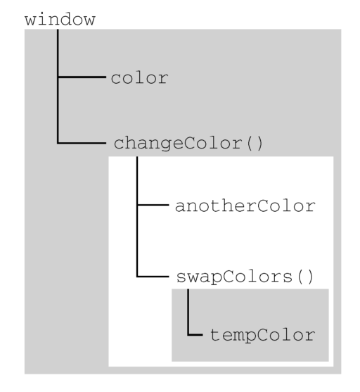
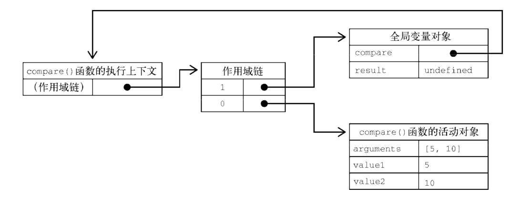
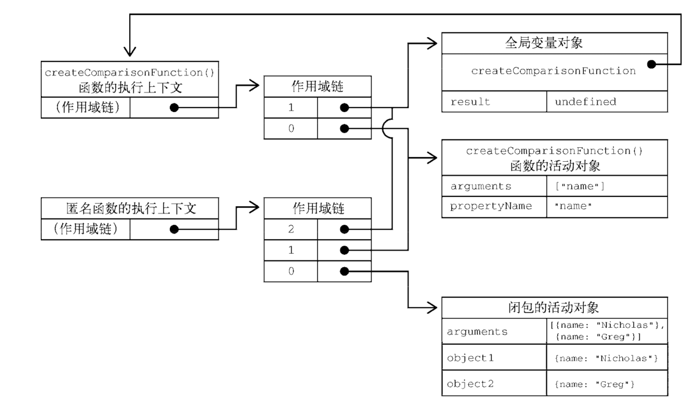

执行上下文与作用域
- 执行环境（Execution context, EC）或执行上下文，是JS中一个重要概念，分三种：全局上下文（在浏览器中为window对象），函数局部上下文，eval()执行环境；
- JS中每个变量或函数的执行上下文决定了它们可以访问哪些数据，以及它们的行为；
- 每个上下文都有一个关联的变量对象（variable object），上下文中定义的所有变量和函数都存在于这个对象上；
- EC的组成：
执行环境 Execution context (EC) 变量对象
Variable object (VO)arguments, variables, functions [[Scope]]属性 指向作用域链 this指针 指向一个环境对象
变量对象和活动对象
- 变量对象（VO）存储了在上下文中定义的变量和函数声明，是规范上或者说是引擎实现上的，不可在javascript环境中访问；
- 调用函数时，会为它创建一个包含arguments和函数参数的活动对象（activation object, AO），这个活动对象被用作变量对象，创建作用域链；
- AO实际是包含了VO的。除了VO之外，AO还包含函数的参数，以及arguments。
AO = VO + function parameters + arguments - 活动对象只在函数执行期间存在。
作用域链
上下文中代码在执行的时候，会创建变量对象的一个作用域链（scope chain）；
代码正在执行的上下文的变量对象始终位于作用域链的最前端；
作用域链的下一个变量对象来自包含上下文，在下一个对象来自再下一个包含上下文，直到全局上下文。全局上下文的变量对象始终是作用域链的最后一个变量对象；
下面例子中，函数 changeColor() 的作用域链包含两个对象：它自己的变量对象（就是定义arguments对象的哪个），全局上下文的变量对象；
changeColor() 函数内部能访问到变量color，就是因为可以在作用域链中找到它。
1
2
3
4
5
6
7
8
9var color = blue
function changeColor() {
if (color === 'blue') {
color = 'red'
} else {
color === 'blue'
}
}
changeColor()再看一个例子：
1
2
3
4
5
6
7
8
9
10
11
12
13
14
15
16
17
18
19var color = 'blue'
function changeColor() {
let anotherColor = 'red'
function swapColors() {
let tempColor = anotherColor
anotherColor = color
color = tempColor
// 这里可以访问color、anotherColor和tempColor
}
// 这里可以访问color和anotherColor，但访问不到tempColor
swapColors()
}
// 这里只能访问color
changeColor()上面代码涉及3个上下文：全局上下文、changeColor() 的局部上下文和 swapColors() 的局部上下文；
swapColors() 局部上下文的作用域链中有3个对象：swapColors() 的变量对象、changeColor() 的变量对象和全局变量对象；
下图展示这个例子的作用域链：
内部上下文可以通过作用域链访问外部上下文中的一切，但外部上下文无法访问内部上下文中的任何东西
函数参数被认为是当前上下文中的变量，因此也跟上下文中的其他变量遵循相同的访问规则
函数作用域链
函数定义时，就会为它创建作用域链，预装载全局变量，保存在内部的
[[Scope]]中；函数调用时，创建相应的执行上下文，复制
[[Scope]]创建其作用域链；接着创建函数活动对象（用作变量对象）并将其推入作用域链前端；
1
2
3
4
5
6
7
8
9
10function compare(value1, value2) {
if (value1 < value2) {
return -1
} else if (value1 > value2) {
return 1
} else {
return 0
}
}
let rusult = compare(5, 10)上面例子中，compare在全局上下文调用，其作用域链上有全局变量对象，其中包含this、result和compare；
第一次调用 compare() 时，会为它创建一个包含arguments、value1和value2的活动对象，用作变量对象推入作用域链前端；
所以 compare() 函数执行上下文的作用域链中有两个变量对象：局部变量对象和全局变量对象；
作用域链其实是一个包含指针的列表：

闭包
闭包（closure）指的是引用了另一个函数作用域中变量的函数，通常是在嵌套函数中实现的；
看下面例子：
1
2
3
4
5
6
7
8
9
10
11
12
13
14function createComparisonFunction(propertyName) {
return function(object1, object2) {
let value1 = object1[propertyName]
let value2 = object2[propertyName]
if (value1 < value2) {
return - 1
} else if (value1 > value2) {
return 1
} else {
return 0
}
}
}这里内部函数（匿名函数）中引用了外部函数的变量propertyName。在这个内部函数被返回并在其他地方被使用后，它仍然引用着那个变量。这是因为内部函数的作用域链包含 createComparisonFunction() 函数的作用域。
函数内部代码在访问变量时，从作用域链中查找变量。函数执行完毕后，局部活动对象被销毁，内存中就只剩下全局作用域了。
闭包就不一样了。
在一个函数内部定义的函数会把其包含函数的活动对象添加到自己的作用域链中；
上面例子中，匿名函数的作用域链中世纪包含 createComparisonFunction() 的活动对象；
在 createComparisonFunction() 返回匿名函数后，匿名函数的作用域链初始化为包含 createComparisonFunction() 的活动对象和全局变量对象；
副作用是，createComparisonFunction() 的活动对象不能再它执行完毕后销毁，因为匿名函数作用域链中仍有对它的引用；
在 createComparisonFunction() 执行完毕后，其执行上下文的作用域链会被销毁，但它的活动对象仍保留在内存中，直到匿名函数被销毁后才会被销毁；
闭包会保留它们包含函数的作用域，所以比其他函数更占用内存，要谨慎使用。（V8等优化的JavaScript引擎会努力回收被闭包困住的内存）
下图展示了以下代码执行的结果：
1
2let compare = createComparisonFunction('name')
let rusult = compare({ name: 'Nicholas' }, { name: 'Greg' })